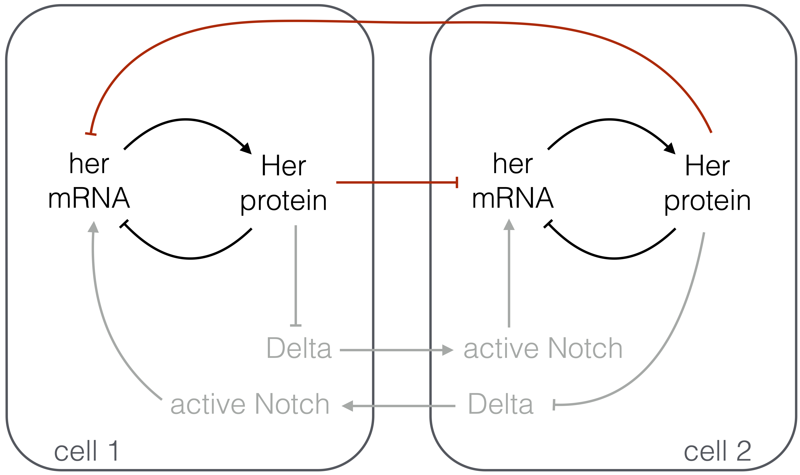

Exercise 11.1: Coupled delay oscillators
This problem was inspired by Julian Lewis’s 2003 paper entitled “Autoinhibition with transcriptional delay: A simple mechanism for the zebrafish somitogenesis oscillator.”
It has been postulated that the oscillations in the zebrafish presomitic mesoderm (PSM) come from a very simple genetic circuit. In particular, two hairy/E(spl)-related (her) genes, her1 and her7, show oscillations. Interestingly, the protein product of these genes inhibit the expression of the genes themselves. So, a simple genetic circuit arises, in which a her gene is autoinhibited. Furthermore, active Notch protein represses expression of Delta in the same cell via the her genes. In this problem, we will model the core oscillator made up of the autoinhibitory her circuit (shown in in black in the figure below) and the coupling of oscillators in neighboring cells by Delta-Notch signaling.

In our analysis, we will neglect the multi-step process of Delta-Notch signaling and the ensuing repression of expression of her (depicted in gray in the figure above) and instead model it as direct repression of her expression in a cell due to Delta in its neighbor (depicted in red in the figure). Most cells in the PSM have many neighbors, all of which contribute to the dynamics, but we will consider only two cells for illustration and for simplicity. (We will discuss juxtracrine signaling, and Delta-Notch in particular, in a future chapter.)
a) As usual, we will describe the dynamics of this circuit with differential equations. Let \(m_1\) be the number of her mRNA molecules in cell 1, and let \(p_1\) be the number of Her protein molecules in cell 1. The variables \(m_2\) and \(p_2\) are similarly defined. Explain in words why the following differential equations are reasonable choices to model the genetic circuit in the figure above.
\[\begin{align} &\frac{\mathrm{d}p_1}{\mathrm{d}t} = \beta_p m_1 - \gamma_p p_1, \\[1em] &\frac{\mathrm{d}m_1}{\mathrm{d}t} = \beta_m\,f(p_1)g(p_2) - \gamma_m m_1,\\[1em] &\frac{\mathrm{d}p_2}{\mathrm{d}t} = \beta_p m_2 - \gamma_p p_2, \\[1em] &\frac{\mathrm{d}m_2}{\mathrm{d}t} = \beta_m\,f(p_2)g(p_1) - \gamma_m m_2, \end{align}\]
where the Greek parameters are all positive constants and \(f(p)\) and \(g(p)\) are arbitrary dimensionless constant or decreasing functions.
b) We will first consider a single her oscillator alone with no coupling to neighboring cells; i.e., we take \(g(p) = \text{constant}\). Prove that this system cannot have oscillations, regardless of what \(f(p)\) is. Hint: You can use a consequence of the Bendixson-Dulac theorem, which states that the dynamical system
\[\begin{align} &\frac{\mathrm{d}x}{\mathrm{d}t} = P(x,y)\\[1em] &\frac{\mathrm{d}y}{\mathrm{d}t} = Q(x,y) \end{align}\]
has no oscillatory solutions if the quantity
\[\begin{align} \frac{\partial P}{\partial x} + \frac{\partial Q}{\partial y} \end{align}\]
always has the same sign.
c) It stands to reason that the amount of mRNA does not immediately affect the rate of production of protein. The mRNA must first be transported out of the nucleus and then be processed for translation. So, we assign a time delay \(\tau_p\) to this process. Similarly, the protein cannot immediately regulate expression of the mRNA, as it must enter the nucleus and bind to the appropriate operator. So, we assign a time delay \(\tau_m\) to this process. Finally, there is a time delay \(\tau_d\) associated with her repression due to Delta-Notch signaling. For simplicity, we will take \(\tau_p \approx 0\), thereby only considering time delays in repression. Because it is of interest in analysis of coupling, we will also assume that \(\tau_m\) for two different cells need not be equal. We therefore have a system of delay differential equations,
\[\begin{align} &\frac{\mathrm{d}p_1(t)}{\mathrm{d}t} = \beta_p m_1(t) - \gamma_p p_1(t), \\[1em] &\frac{\mathrm{d}m_1(t)}{\mathrm{d}t} = \beta_m\,f(p_1(t-\tau_{m,1}))g(p_2(t-\tau_d)) - \gamma_m m_1(t),\\[1em] &\frac{\mathrm{d}p_2(t)}{\mathrm{d}t} = \beta_p m_2(t) - \gamma_p p_2(t), \\[1em] &\frac{\mathrm{d}m_2(t)}{\mathrm{d}t} = \beta_m\,f(p_2(t-\tau_{m,2}))g(p_1(t-\tau_d)) - \gamma_m m_2, \end{align}\]
where the time dependence on each variable is now explicit. Going forward, we will use
\[\begin{align} f(p) = \frac{1}{1 + (p/k_c)^2},\\[1em] g(p) = \frac{1}{1 + p/k_t}. \end{align}\]
We have a Hill coefficient of two for \(f(p)\) because it is known that repression of expression of her1 is accomplished by a dimer of Her proteins.
Nondimensionalize the dynamical equations to get
\[\begin{align} &\frac{1}{\gamma_p}\frac{\mathrm{d}\tilde{p}_1}{\mathrm{d}\tilde{t}} = \beta\,\tilde{m}_1(\tilde{t}) - \tilde{p}_1(\tilde{t}), \\[1em] &\frac{1}{\gamma_m}\frac{\mathrm{d}\tilde{m}_1}{\mathrm{d}\tilde{t}} = \frac{1}{\left(1 + \left(\tilde{p}_1(\tilde{t}-1)\right)^2\right)\left(1 + \kappa \tilde{p}_2(\tilde{t}-\tau)\right)} - \tilde{m}_1(\tilde{t}), \\[1em] &\frac{1}{\gamma_p}\frac{\mathrm{d}\tilde{p}_2}{\mathrm{d}\tilde{t}} = \beta\,\tilde{m}_2(\tilde{t}) - \tilde{p}_2(\tilde{t}), \\[1em] &\frac{1}{\gamma_m}\frac{\mathrm{d}\tilde{m}_2}{\mathrm{d}\tilde{t}} = \frac{1}{\left(1 + \left(\tilde{p}_2(\tilde{t}-\tau_{12})\right)^2\right)\left(1 + \kappa \tilde{p}_1(\tilde{t}-\tau)\right)} - \tilde{m}_2(\tilde{t}), \end{align}\]
where \(\gamma_p\), \(\gamma_m\), \(\beta\), \(\kappa\), \(\tau\), and \(\tau_{12}\) are dimensionless constants. Be sure to write expressions for these constants. Give a physical meaning for \(\gamma_p\) and \(\gamma_m\). Note that we have reduced the number of parameters from nine to six. Henceforth, as you are working through the problem, you can drop the tildes for notational convenience.
d) We have now conveniently nondimensionalized the dynamical equations, and we return for a moment to analyze the case of a single oscillator (\(\kappa = 0\)). If \(\gamma_p\) and \(\gamma_m\) are very large, the left hand sides of the dimensionless dynamical equations are close to zero. Thus, if there are two solutions for the steady states, the system can oscillate between the two steady states. Considering only cell 1, show that two steady states exist for \(\beta > 2\), but not otherwise. Hint: When working out the steady states, consider \(\tilde{p}_1(t) = \tilde{p}_b\) and \(\tilde{p}_1(t-1) = \tilde{p}_a\), with similar definitions for \(\tilde{m}_a\) and \(\tilde{m}_b\).
e) Now, let’s see the oscillations! Numerically solve the dimensionless equations for the dynamics of cell 1 (with \(\kappa = 0\); we are still considering the decoupled case). Use various values of the parameters \(\gamma_m\) and \(\beta\). For simplicity, assume \(\gamma_p = \gamma_m\). For your initial condition, assume that mRNA and protein are both absent and then her1 is suddenly available for transcription at time \(t = 0\). Plot your results and comment on them. In particular, what must be true of the magnitude of \(\gamma_m\) and \(\gamma_p\) in order to get oscillations, and what does this mean physically?
f) We will now investigate how coupling serves to bring the oscillators into synchrony. We will consider \(\tau_{12} \ne 1\), which means that the oscillators in the respective cells have inherently different periods, so they should be out of phase without coupling. We will numerically solve the four dimensionless dynamical equations with nonzero \(\kappa\). For this, we will take \(\gamma_p = \gamma_m = 20\), \(\beta = 3\), \(\kappa = 1\), and \(\tau = 1.25\). What do the latter two choices mean physically?
For your initial conditions, assume both cells are completely absent of \(her\) mRNA and protein and the \(her\) gene suddenly become transcriptionally active at time \(t = 0\). Investigate how coupling brings the oscillators into phase by numerically integrating the dynamical equations for various values of \(\tau_{12}\).
You may want to build a dashboard to investigate how changing parameters affects the oscillations between the two cells and their coupling.